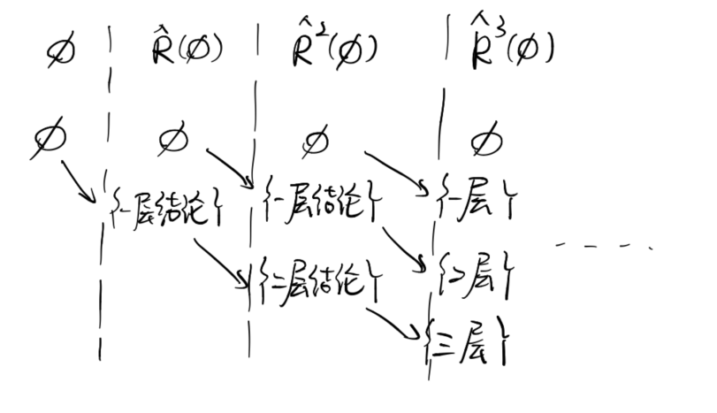

我最喜欢吃红豆了。
单独开一篇讨论不动点在证明循环时候的作用。可恶
我选择用操作语义去证明它。回顾while的操作语义$w=while\;b\;do\;c$：
下面，我将结合$C:=0;while\;C<1\;do\;C:=C+1;$这个例子来说明证明方法。
（先用顺序赋值整个$\lang C:=0,\sigma_0\rang\rightarrow\sigma_1$
构造规则实例集合$R$。在例子中，有：
这其实是我们解这个循环需要的所有的规则实例了。
构造算子$\hat{R}$：
注意，关键是有这样一条链：
这是为什么？先看下例子：
实际上，我们可以对得到的结论进行分层。一层为公理（由空集推出），二层为由一层结论和公理推出的，三层为前两次和公理推出的…..
于是很显然，$\hat{R}(\emptyset)$就包含了公理，而$\hat{R}^2(\emptyset)$就包含了公理和一层结论（因为当然$\emptyset\subseteq \hat{R}(\emptyset)$）。而$\hat{R}^3(\emptyset)$就包含了公理，一层结论和二层结论。画个图的话，就如下：

于是我们发现，随着算子$\hat{R}$的迭代，有：
于是我们就可以定义$fix=\bigcup_{n\in\omega}\hat{R}^n(\emptyset)$了。
- 首先，$fix$是对$R$封闭的。很显然，$\forall X\subseteq fix,\frac{X}{y}\in R$，有$y\in fix$。
- 其次，因为$fix$是对$R$封闭的，所以$\hat{R}(fix)\subseteq fix$。因为$\forall y\in\hat{R}(fix)$，由$\hat{R}$算子的定义，都有$\exists X\subseteq fix,\frac{X}{y}\in R$。而fix是对R封闭的，所以有$y\in fix$。
- 再者，有$fix\subseteq \hat{R}(fix)$。因为$\forall y\in fix$，$\exists n,y\in\hat{R}^n(\emptyset)$。那么根据算子定义就有$\exists X,X\subseteq\hat{R}^{n-1}(\emptyset)\subseteq fix$。根据算子定义，就有$y\in\hat{R}(fix)$。
- 于是综上，就有了$\hat{R}(fix)=fix$。而$fix$集合就是我们要的循环的操作语义，就是一层层循环计算的过程。
为什么要整这么麻烦？为什么不能直接很显然地：
呢？其实这牵扯到一个域收敛的问题。当这个循环是有限次截至的话，因为规则实例一定是有限个，那么这么写肯定没问题。但对一般的循环我们不清楚执行情况的话，证明将变得不严谨。其实还是用到了一个定理：
- 完全格上的单调连续函数一定有不动点。